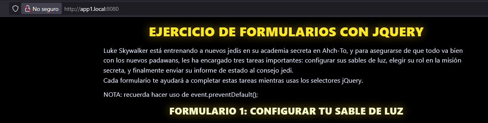

Fase 4: Configuración avanzada (subdominios locales)¶
Para subdominios locales, se modificó el archivo hosts:
127.0.0.1 app1.local
127.0.0.1 app2.local
Ejecutando diferentes contenedores Apache en distintos puertos:
docker run -d -p 8081:80 --name app1 mi-apache-app
docker run -d -p 8082:80 --name app2 mi-apache-app
Acceso a las apps:
http://app1.local:8081
http://app2.local:8082
Nota: Apache permite esto, pero Nginx facilita la gestión de subdominios y balanceo de contenido estático para varios dominios, siendo ideal para CDN y optimización de recursos.
